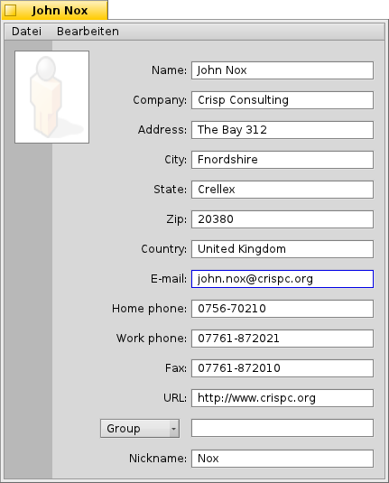
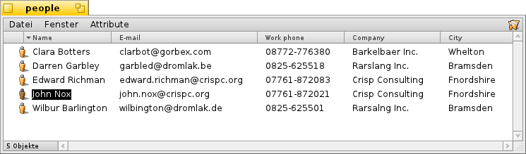

Deutsch
Deutsch Français
Français Italiano
Italiano Русский
Русский Español
Español Svenska
Svenska 日本語
日本語 Українська
Українська 中文 ［中文］
中文 ［中文］ Português
Português Suomi
Suomi Slovenčina
Slovenčina English
English Kontakte
Kontakte
| Deskbar: | ||
| Ort: | /boot/System/apps/Kontakte | |
| Einstellungen: | ~/Konfiguration/settings/People_data |
Kontakte ist eine einfache Kontaktverwaltung, die die Attribute von Haikus Dateisystem dazu nutzt, Adressen und andere Kontaktinformationen zu speichern. Jeder Kontakt ist dabei eine eigene "Person" Datei mit ihren Daten in getrennten Attributen. Sie alle sind indiziert und daher mittels Queries durchsuchbar.
Mit dem Group Attribut ganz unten, lässt sich eine Person einer oder mehreren Gruppen zuordnen. Das ist nützlich bei "Massenmailings" an eine Reihe von Leuten, die z.B. gemeinsam an einem bestimmten Projekt arbeiten. Das Drop-Down Menü enthält alle momentan existierenden Gruppen. Gehört eine Person zu mehreren Gruppen, werden deren Namen mit einem "," getrennt.
Diese "Person" Dateien werden normalerweise im Ordner /boot/Benutzer/people/ abgelegt. Für eine Liste aller Kontakte öffnet man einfach seinen People Ordner und blendet sich die gewünschten Attribute ein. Benutzt man mehrere Verzeichnisse um seine Kontakte zu ordnen, kann man sie mittels einer Query alle in einem einzigen Fenster anzeigen lassen.
Diese Dateien verhalten sich wie jede andere: Man kann sie nach ihren Attributen sortieren (sogar mit einer sekundären Sortierfolge durch halten von SHIFT während des Klickens) und sie lassen sich natürlich entfernen, duplizieren und umbenennen. Sogar die Kontaktinformationen selbst lassen sich direkt bearbeiten: Ein Klick auf ein Attribut (oder ALT E) springt in den Editiermodus genau wie das auch beim Dateiumbenennen geschieht. In diesem Modus springt man mit TAB und SHIFT TAB von Spalte zu Spalte.